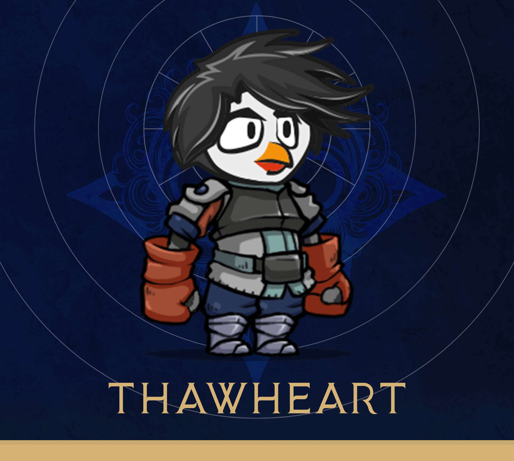

A selection of games I have worked on.
Click on the thumbnail for a showreel and more info on my role on each project.
Headphones recommended!

John Lemon's Haunted House

Viking Village

First Person Shooter (demo)

Topoly

Orbit

Project Utgardr

Thawheart

Unreleased SFX for game development